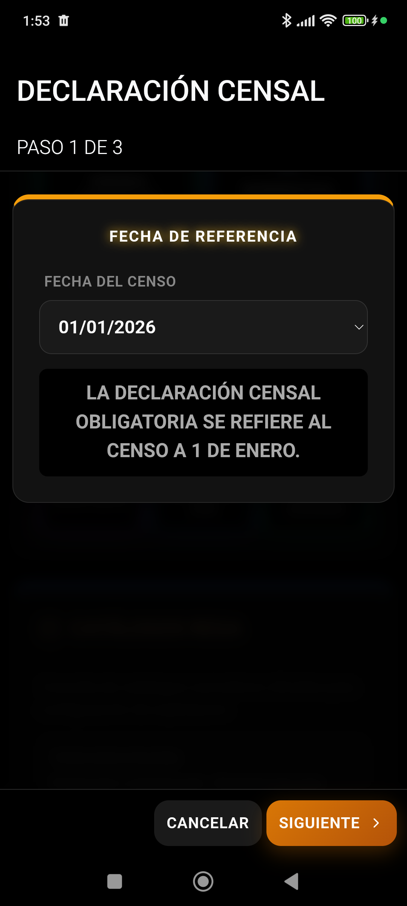

Cumplimiento del Real Decreto 787/2023 · Guía v4.8.7
REGISTRO OFICIAL AUTOMATIZADO

Validación del censo y movimientos antes de la exportación del Cuaderno Digital.
1. Introducción al Cuaderno Digital
El Cuaderno Digital de Explotación Ganadera es una obligación legal en España que unifica todos los datos operativos de la finca en un único expediente oficial para auditorías y saneamientos.
La aplicación Livestock Manager recopila de forma totalmente transparente e integrada los datos introducidos en el día a día para consolidarlos automáticamente, evitando la doble entrada de datos por parte del ganadero.
2. Estructura del Informe
El cuaderno generado abarca 8 bloques obligatorios estructurados secuencialmente:
Datos de Explotación: Información general de la finca, código REGA del censo ganadero y datos del titular/ADSG.
Censo Ganadero: Cómputo total de animales activos desglosados por especie, sexo y categorías zootécnicas.
Movimientos de Ganado: Altas (compras/nacimientos) y bajas (ventas/muertes) del ciclo actual.
Historial Sanitario: Libro de tratamientos veterinarios, medicamentos recetados, veterinario a cargo y control de periodos de supresión.
Reproducción: Datos reproductivos consolidados (cubriciones, diagnósticos y partos).
Producción: Rendimiento de producción cárnica (pesajes) y láctea (entregas de tanque).
Alimentación: Registro de pienso consumido e imputaciones de pastoreo por rebaño.
Incidencias: Mortalidades, pérdidas de crotales o bajas accidentales registradas.
3. Flujo de Generación y Exportación
El proceso de consolidación y generación del informe consta de los siguientes pasos:
1
Recopilar
Cruzar datos de BD local
➔
2
Consolidar
Cálculo de censo y categorías
➔
3
Validar
Chequeo de REGA y sanitarios
➔
4
Generar
Crear maquetación en PDF
➔
5
Compartir
Envío nativo a correo u OCA
Para acceder, dirígete a Más → Cuaderno. El sistema comenzará inmediatamente la recopilación en segundo plano y te ofrecerá el botón de "Exportar PDF" en la parte superior derecha.
Livestock Manager Premium · v4.8.7 · Guía del Cuaderno Digital